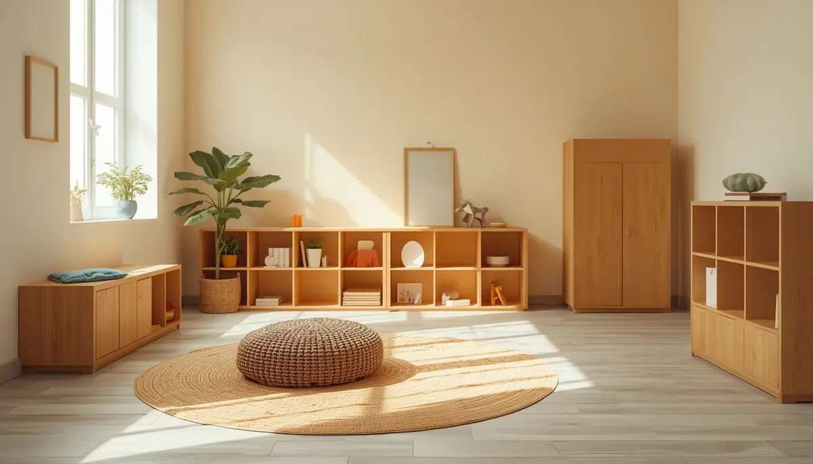

Conciliar el sueño con los horarios escolares
El inicio de la etapa escolar introduce un cambio drástico en los ritmos biológicos del menor. Las mañanas tempranas, las actividades extraescolares y la reducción progresiva de las siestas diurnas exigen un reajuste importante en la organización familiar. Gestionar estas transiciones con flexibilidad previene la fatiga acumulada, permitiendo que el niño afronte la jornada lectiva con energía y buen humor.
Adaptar las transiciones diurnas y evitar el agotamiento escolar
Cuando un niño comienza el colegio o experimenta un cambio de curso, su cerebro absorbe una cantidad enorme de estímulos y normas sociales durante todo el día. Al llegar la tarde, es común observar un comportamiento hiperactivo o irritable que en realidad esconde un profundo cansancio. Adelantar ligeramente la hora de acostar por la noche compensa con creces la pérdida de descanso diurno derivada de la eliminación de las siestas.
"Ajustar las horas de descanso nocturno ante las exigencias del calendario escolar protege el equilibrio emocional y cognitivo del menor durante el día."
Pautas prácticas para armonizar los ritmos de casa y el colegio
Establecer una sintonía fluida entre las rutinas del hogar y las obligaciones lectivas ayuda a estabilizar el reloj biológico del menor:
1. Mantener horarios constantes los fines de semana: Intentar no alterar en exceso la hora de levantarse y acostarse durante los días libres, evitando el efecto jet lag social que dificulta el sueño del domingo por la noche.
2. Crear una transición calmada al volver de clase: Ofrecer un espacio de juego libre y tranquilo tras la jornada escolar, permitiendo que el sistema nervioso descargue la tensión acumulada antes de encarar la tarde.
Creciendo con un ritmo de descanso equilibrado
Coordinar las necesidades biológicas del sueño con las exigencias del entorno escolar requiere observación y paciencia. Con unos horarios flexibles pero estables, el niño transita su etapa educativa con vitalidad y bienestar.
➔ Volver al índice de Trastornos del sueño